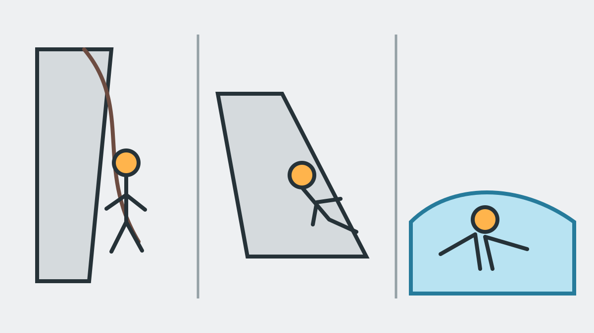

Was ist Canyoning?
Canyoning ist das Begehen einer Schlucht entlang ihres Wasserlaufs von oben nach unten. Je nach Gelände bewegt ihr euch zu Fuß, klettert über Felsstufen, schwimmt durch Becken, rutscht über vom Wasser geformte Felsen, seilt euch ab oder nutzt freiwillige Sprungstellen.
Eine geführte Tour ist keine Aneinanderreihung von Mutproben. Die Gruppe folgt einem natürlichen Weg, während der Guide Technik, Reihenfolge, Sicherung und geeignete Varianten vorgibt.

Was macht man beim Canyoning?
- Gehen und Abklettern
- Ihr bewegt euch über nassen, unebenen Fels und durch flache Wasserpassagen.
- Abseilen
- An steileren Stufen werdet ihr am Seil abgelassen oder seilt euch nach Einweisung selbstständig ab.
- Rutschen
- Geeignete, vom Wasser geformte Felsrinnen können kontrolliert als natürliche Rutschen genutzt werden.
- Schwimmen
- Tiefere Gumpen und kurze Wasserpassagen werden schwimmend durchquert.
- Springen
- Sprünge sind bei unseren Touren freiwillig. Jeder Sprung kann umgangen werden.
Canyoning, Rafting oder Klettersteig?
Beim Rafting fährt eine Gruppe gemeinsam in einem Schlauchboot auf einem Fluss. Beim Klettersteig bewegt ihr euch an Drahtseilen und künstlichen Tritten am Fels. Beim Canyoning seid ihr direkt im Wasserlauf unterwegs und kombiniert Wildwasser-, Geh-, Kletter- und Seilelemente. Das Erlebnis ist dadurch besonders abwechslungsreich, aber auch stärker von Wasserstand und natürlichen Bedingungen abhängig.
Ist Canyoning für Anfänger geeignet?
Ja, wenn Tour und Gruppe zusammenpassen. Für Merlins World und Kangaroo Jump sind keine Canyoning-Vorkenntnisse erforderlich. Alle Teilnehmer müssen sicher schwimmen können, trittsicher sein und über die zur gewählten Tour passende Grundfitness verfügen. Sehr sportliche Touren verlangen deutlich mehr Ausdauer.
Höhen- oder Wasserangst sollte vorab ehrlich angesprochen werden. Wir haben solche Situationen häufig begleitet, bleiben eng bei der betroffenen Person und empfehlen im Zweifel die leichtere Tour.
Welche Ausrüstung braucht man?
Zur persönlichen Canyoning-Ausrüstung gehören Neoprenanzug, Neoprensocken, Helm, Canyoning-Gurt und Schuhe mit geeignetem Profil. Seile und weiteres Sicherheitsmaterial werden passend zur Tour mitgeführt. Bei unseren Touren stellen wir die vollständige Ausrüstung einschließlich spezieller Canyoning-Schuhe.
Der Neoprenanzug schützt nicht nur vor Kälte, sondern auch vor direktem Kontakt mit Fels. Helm, Gurt und Schuhe müssen richtig sitzen. Deshalb werden Ausrüstung und Größen vor dem Einstieg kontrolliert.

Ist Canyoning gefährlich?
Canyoning ist ein Natursport und damit nicht frei von Risiken. Wasserstand, Strömung, Gewitter, Steinschlag, rutschiger Fels und die körperliche Verfassung der Teilnehmer müssen berücksichtigt werden. Sicherheit entsteht durch eine passende Tourwahl, qualifizierte Führung, geeignete Ausrüstung, eine vollständige Einweisung und das Befolgen der Guide-Anweisungen.
Regen am Treffpunkt ist nicht allein entscheidend. Auch Niederschlag oder Gewitter im Einzugsgebiet können den Wasserstand einer Schlucht beeinflussen. Die endgültige Sicherheitsentscheidung treffen wir als autorisierte Schluchtenführer.
Was erwartet euch bei der ersten Tour?
Vor dem Einstieg erhaltet ihr eure Ausrüstung und eine Sicherheits-Einweisung. In der Schlucht zeigt der Guide jede Technik beim Einweisungsgespräch sowie unmittelbar vor der jeweiligen Stelle. Ihr müsst also keine Abseil- oder Wildwassertechnik mitbringen. Entscheidend sind Aufmerksamkeit, ehrliche Kommunikation und die Bereitschaft, als Gruppe zusammenzuarbeiten.
Den Ablauf einer geführten Canyoning-Tour Schritt für Schritt ansehen
Fachlich eingeordnet von Tanja und Mario
Diese Informationen wurden von Tanja und Mario erstellt und fachlich geprüft. Beide sind autorisierte Tiroler Schluchtenführer und führen private Canyoning-Touren persönlich.